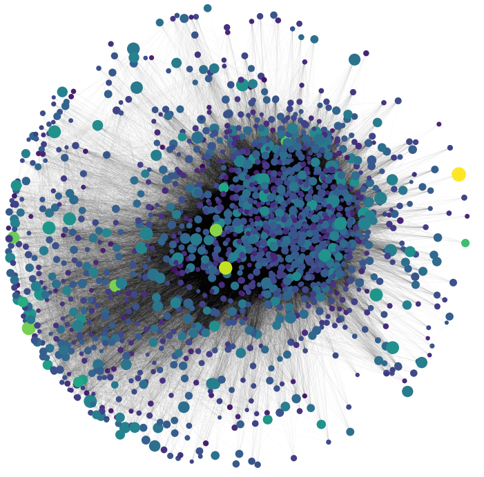
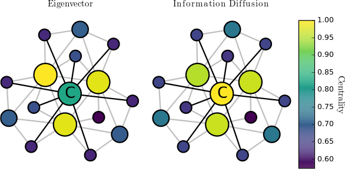
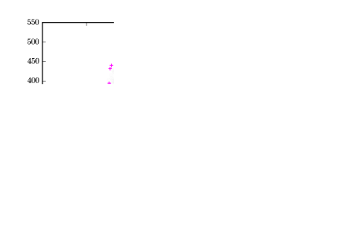
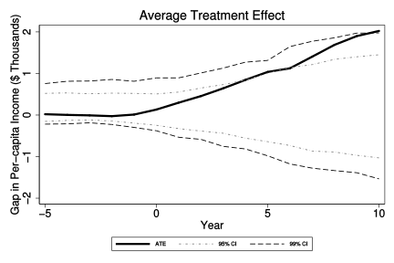
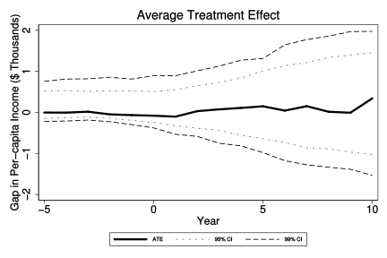

Edwin Hu
Ph.D Finance (Expected Spring 2016)
1 Research
1.1 Interests
Information asymmetry, institutional investors, networks, causal inference.
1.2 Working Papers
1.2.1 Information Diffusion in Institutional Investor Networks
Job Market Paper
This paper shows that network information flows generate a substantial information advantage for "central" institutional investors. I develop a new measure, Information Diffusion Centrality, which captures an investor's access to novel information as it arrives and diffuses through the network. I show that the abnormal interim trading performance of central investors is on average 32 basis points higher than that of peripheral investors in the following quarter. Central investors also have superior access to information about mergers. Central investors' round-trip trading performance in target stock is on average 150 basis points higher than that of peripheral investors. Centrality is distinct from common sources of information due to connections to merger advisors, is unrelated to industry expertise, and does not spuriously predict trading performance around sudden deaths of board members and key executives. My results suggest that institutional investors regularly share valuable information with one another.
- 
- 
1.2.2 What Does the Pin Model Identify as Private Information?
with Jefferson Duarte, and Lance Young
Revise and Resubmit at Journal of Finance
Some recent papers suggest that the Easley and O'Hara (1987) probability of informed trade (PIN) model fails to capture private information. We investigate this issue by comparing the PIN model with the Duarte and Young (2009) (DY) and Odders-White and Ready (2008) (OWR) models of private information arrival. We find that the PIN and DY models fail to capture private information because they mistakenly associate variations in turnover with the arrival of private information. On the other hand, the OWR model, which uses returns along with order flow imbalance to identify informed trade, seems to produce patterns that are consistent with the arrival of private information.
- 
1.2.3 Credit Be Dammed: The Impact of Banking Deregulation on Economic Growth
with Elizabeth Berger, Alexander Butler, and Morad Zekhnini
We document substantial variation in the effect of state-level bank branching deregulation in the United States on economic growth. We examine the sources of this variation by testing multiple channels that may link deregulation and economic growth. Using a matching method that utilizes synthetic counterfactual states, we find support for the hypothesis that economic growth was associated with states where deregulation solved a capital immobility or "dammed" credit problem. We do not find support for other channels, which posit that banks became more efficient, financed more innovative businesses, or learned by observing prior deregulations.
- 
- 
2 Contact
| Jesse H. Jones Graduate School of Business | Last Updated: 2015-11-15 |
| Rice University | |
| 6100 Main St. | (206) 552-9388 |
| Houston, Texas 77005-1892 | eddyhu@gmail.com |
| Office 359A |